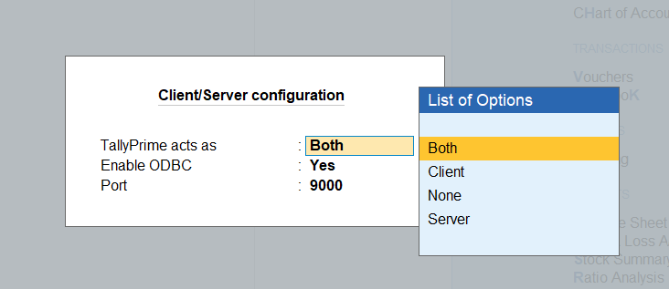
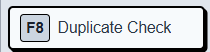
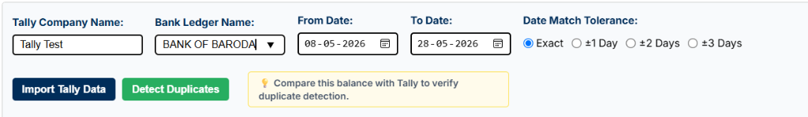
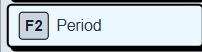
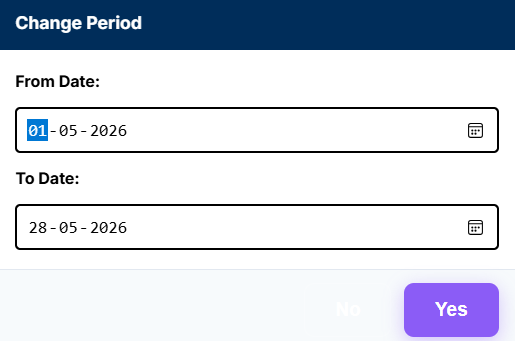
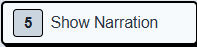
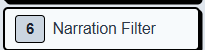
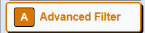
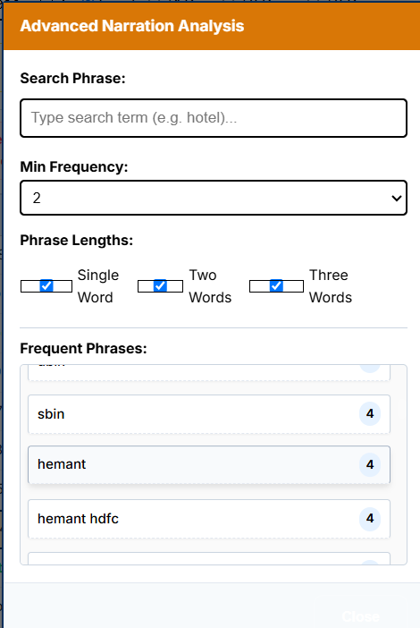

Use the folder icon in the center of the Review Desk screen (shown when the desk opens before loading files) to import your generated bank statement XML file for auditing.
App Icon:📁
1
Click the 📁 Folder Icon in the center of the Review Desk screen to browse for your file, or drag and drop your XML file directly onto the workspace.
2
Select the bank statement XML file that you created using the converter app.
3
All transactions from the file will immediately load into the grid, allowing you to edit names, filter entries, and check for duplicates.
2. Linking and Syncing Tally Ledgers
Save time and prevent errors by copying the exact ledger account names directly from Tally Prime.
App Button:
!
Why this is important: When changing ledger accounts, you must type the exact spelling as saved in Tally Prime. If there is a spelling mistake, Tally will throw errors and reject the transactions during import.
1
Open Tally Prime, go to Help (F1) ➔ Settings ➔ Connectivity.
2
Click on the first option in the list: Client/Server configuration.
ODBC Server Configuration: Set to Both, Yes, Port 9000

3
Set the settings exactly like this:
• Set TallyPrime acts as to Both • Set Enable ODBC to Yes • Set Port to 9000 Press Ctrl + A to save, and restart Tally Prime. *(This is a one-time configuration)*
4
Make sure your active target company is loaded in Tally Prime, and you are on the Gateway of Tally screen. Then click the green Sync Tally button to copy the ledger names.
ℹ️
Gateway of Tally Requirement: For every new Sync operation, Tally Prime must be running in the background and you must remain in the Gateway of Tally view of the target company on Tally.
3. Get Tally Data (Duplicate Check Mode)
Import your Tally ledger records into the app's temporary memory to scan for duplicate vouchers.
App Button:
1
In Tally Prime, make sure the target company is loaded and you are on the Gateway of Tally screen.
2
In our app's Duplicate Check panel, type the exact Tally Company Name and Bank Ledger Name as they appear in Tally, then select the date period.
3
Click the Import Tally Data button. This fetches the vouchers for that period and stores them silently in the app's memory.
4
Note: This button will **not** display Tally vouchers on your screen. It loads the vouchers into memory behind the scenes to perform the duplicate check in the next step.
ℹ️
Gateway of Tally Warning: To import Tally data successfully, Tally Prime must be running in the background and your view must be on the Gateway of Tally screen of the respective company.
4. Detect Duplicate Transactions
Identify and flag entries in your bank statement that are already posted in Tally Prime.
App Button:
1
Make sure you have clicked Import Tally Data first to load Tally's history for the selected period.
2
Click the Detect Duplicates button.
3
The app will compare your statement entries against Tally's memory records and flag matched rows.
⚠️
Important Audit Detail: The Duplicate Check results panel calculates the **Debit, Credit, and Closing Balance for duplicate vouchers only**. It does not calculate these balances for new, unique vouchers.
5. Review Desk Helper Buttons
Use these utility buttons in the right sidebar panel to filter, group, and edit your entries quickly.

F8 Duplicate Check Button
Opens or closes the Duplicate Check configuration panel to scan bank transactions against Tally history.

Tally Company Name:Enter the exact name of the active company as saved in Tally Prime (e.g., "Tally Test"). Make sure Tally Prime is running and this company is open on the Gateway of Tally screen.
Bank Ledger Name:Select the exact Bank Account ledger name from the dropdown as it is configured in Tally Prime (e.g., "BANK OF BARODA").
From Date / To Date:Select the date period for which you want to cross-reference transactions from Tally to verify duplicates.
Date Match Tolerance (తేదీ సరిపోలిక మార్జిన్):
Sometimes transactions are recorded on slightly different dates in Tally compared to when they clear in the bank statement. You can choose a buffer window:
• Exact: The voucher date in Tally and bank statement transaction date must match exactly on the same calendar day.
• ±1 Day: Checks for duplicate entries posted 1 day before or 1 day after the statement date.
• ±2 Days / ±3 Days: Checks within a 2 or 3-day window. Extremely useful for weekend transactions or bank holidays where clearance takes a few extra days.
⚠️ How to Exit: Click the F8 Duplicate Check button again on the right panel to exit duplicate check mode and return to normal review mode.

F2 Period Button
Filters the table to view transactions within a specific starting and ending date range.

⌨️ How to Exit: Press the Esc key on your keyboard to close the period selector modal.

5 Show / Hide Narration Button
Toggles narration visibility. Click this button to show transaction narrations, or click it again to hide them and save screen space.
🔄 How to Exit: This is a toggle button. Click it again to undo and restore the narration visibility state.

6 Narration Filter Button
Type a name or keyword (like "Zomato", "Salary", or "Rent") to filter the table. The app will immediately show only the transactions that contain that word in their narrations. This makes it extremely easy to filter, select, and replace multiple ledger accounts at once!
⌨️ How to Exit: Press the Esc key on your keyboard to clear the search filter and close the search input box.
Y Replace Ledger Button
After selecting multiple vouchers (using Shift + Arrow, Ctrl + Click, or Easy Select Mode), click this button to bulk replace and overwrite their suspense ledger accounts with the correct Tally ledger name.
⌨️ How to Exit: Press the Esc key on your keyboard to dismiss and close the Replace Ledger dialog.
M Monthly Analysis
Renders a month-by-month graphical cashflow visualizer of inflows and outflows. It also displays the final closing balance of each month so you can easily cross-check and reconcile it against your physical bank statement PDFs or Tally Prime records.
⌨️ How to Exit: Press the Esc key on your keyboard to close the monthly analysis chart overlay.

A Advanced Filter Button
This is an advanced version of the narration filter. Instead of manually guessing and typing names or phone numbers, this feature automatically scans all transaction narrations in your statement and lists the most frequently occurring keywords, names, or phone numbers along with their frequency counts (i.e., how many times that keyword is present across all narrations).
When you click on any keyword in this list (like "sbin" or "hemant"), the app automatically filters the statement table to show only those vouchers containing that keyword (just like the narration filter) so you can replace multiple vouchers at once. You can also search for custom phrases or adjust the minimum frequency filter inside this modal.

⌨️ How to Exit: Press the Esc key on your keyboard to close the Advanced Narration Analysis window.
6. Keyboard Shortcuts & Selecting Multiple Rows
Speed up your workflow by selecting multiple transactions at once, deleting unwanted rows, and saving your modifications instantly.
🖱️
How to Select Multiple Rows: • Easy Select Mode (Ticked): Tick the "Easy Select Mode" checkbox in the right sidebar. Once enabled, you can simply click directly on multiple transaction rows one-by-one to select them (no need to hold any keyboard keys).
• Shift + Arrow Down / Up: Hold the Shift key and press arrow keys to select multiple consecutive rows.
• Ctrl + Click: Hold the Ctrl key and click on individual rows to select multiple non-consecutive rows.
❌
How to Delete Vouchers: 1. Select one or more rows (using Easy Select Mode, Shift + Arrows, or Ctrl + Click).
2. Click the red Delete Vouchers button at the bottom-right of the screen, or press the Delete key on your keyboard.
💾
How to Save Changes: • After making any modifications (like editing ledger accounts or deleting rows), click the green Save (Ctrl+S) button at the bottom-right, or press Ctrl + S on your keyboard.